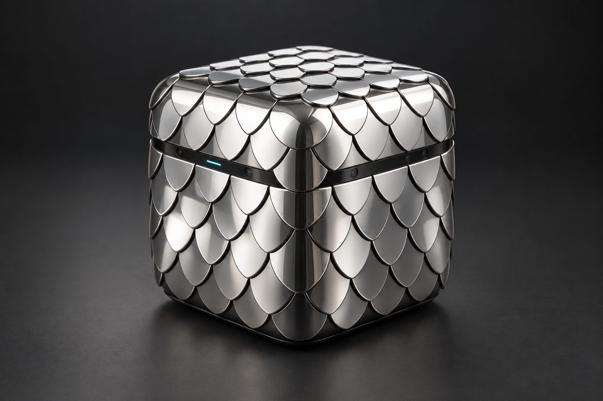
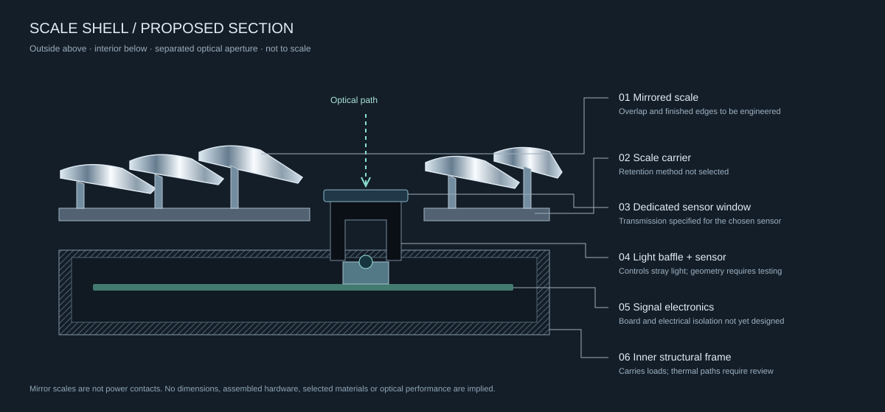
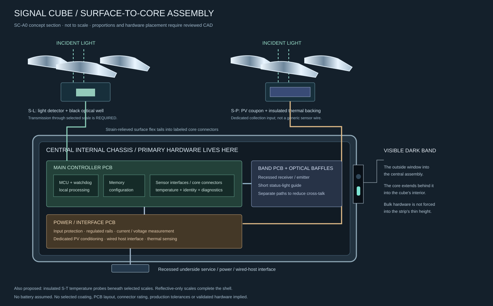

A mirror surface is not automatically a sensor window or a solar collector. Its optical behavior must be measured before other functions are assigned to it.
MAGNEXIS / PHYSICAL SIGNAL SYSTEMSA small cube.
A small cube.
A world of signals.
LATTICE is a refined, cube-shaped sensor and signal hub. It gathers information from its surroundings or connected devices, makes sense of it locally, and sends the useful signals where they belong.
HARDWARE CONCEPT / WORKING SOFTWARE LAB
Sense. Understand. Connect.
Imagine one quiet object on your desk, in a room, or beside a machine. Light, temperature and movement become clear, traceable messages for another cube, a computer or an automation system.
The demo below routes virtual readings to local software destinations. Physical sensors and external connections remain future hardware work.01 / Receive
Read built-in sensors or accept input from connected equipment.
02 / Understand
Identify the source and units, smooth noisy readings and apply a rule.
03 / Route
Send useful messages to a chosen destination, with bounded buffering if it goes offline.
04 / Explain
Inspect exactly what was sent, where it went and what happened to it.
THE CORE OF LATTICE
Signal Cube / 01
A working local router with simulated sensor input. Every displayed delivery reaches one of the panels below.

ReadySTREAM PAUSEDOverlapping mirror scales. A recessed sensing band. A quiet line of light. Concept rendering; scale mounting, dimensions and electronics remain engineering work.
Choose what the cube sends
Applying a route resets the filter and drops pending messages. Delivered history remains available. Route settings persist on this device.
Streaming samples once a second while this tab is visible. Uncheck availability to test a connection interruption. This does not disconnect your network.
Latest delivered measurement
Received messages
Inspect the latest delivered packet
One object, many roles.
A room sensor. A machine monitor. A physical input for creative software. A bridge between devices that do not speak the same language. The core stays the same: receive a signal, give it meaning, and deliver it reliably.
MIRRORFIELD explores how the cube's exterior could also collect light, reveal activity and respond to its surroundings. The existing flat array remains a separate material and energy experiment—not the proposed cube enclosure.
YOUR WORKSPACE
ARRAY 01 / LOCAL LABMirrorfield Observatory
Select any module to learn its role. Use the controls to change the experiment.
◉
Preparing your experiment
0.0 s
THE MODULE ARRAY · SELECT TO INSPECTLIVE TWIN
● Sensing● Optics● Energy● Logic● Motion● Connection
Collected
→Battery
⇄Motor
Edge light
Replay what happened
Scrub to inspect retained evidence. Replay pauses execution; return to live before editing. Last 600 snapshots retained.
Fault center
Investigate faults, inspect the evidence and acknowledge what you have reviewed. Acknowledging an incident does not clear the cause or turn power back on.
Practice a failure
These drills inject a fault into the current simulation. They do not affect real hardware. Use the inspector to clear the fault and re-arm the motor when needed.
Why did this motor act?
Explore the detailed signal trail
Self-described virtual network
Derived from passports and simulation links. Physical cable discovery is not implemented.
Where the incident energy goes
Appearance / collection trade space
| Reflectance | PV output / cell | Heat / cell |
|---|
Normal incidence, current irradiance, 25°C, 80 × 80 mm gross aperture. Hypotheses, not spectral measurements; framing losses omitted.
2D ray experiment
1,000 rays, diagonal mirror, edge collector spanning 20% of cavity height. Separate geometric experiment; does not set the recapture assumption above.
Pre-deployment checks
Hardware deployment unavailable. Passing simulation checks does not qualify an electrical assembly.
LatticeLight / Bridge diagnostics
No diagnostic sent.
Keep the experiment.
Configuration persists locally. Export a patch or the full retained run for inspection.
01 / THE EXTERIORA skin of mirrors.
A skin of mirrors.
Not a box with a screen.
Small, overlapping reflective scales wrap the cube. Their changing reflections give the object its identity, while a recessed optical band gives its sensors a deliberate view of the environment.
02 / UNDER THE SCALESSeparate the surfaces.
Separate the surfaces.
Give each one a job.
The mirror skin, sensing window and internal electronics should not be one undifferentiated layer. This proposed cross-section explains the boundaries the engineering work must resolve.

A dedicated window and light baffle separate the sensor's view from surrounding reflections and status lighting. Its transmission depends on the chosen wavelength and material.
Proposed mounts, electrical isolation, service access and thermal paths belong to the internal structure. The scales should not double as power contacts.
MANUFACTURING DIRECTION / SC-A0The same exterior.
The same exterior.
A defined internal core.
The mirror-scale image above is the selected appearance reference. Selected scales house light detectors, photovoltaic elements or temperature probes beneath them. The dark middle band is the visible perimeter of the central hardware assembly.

Light sensors and PV sit behind partially transmitting mirror stacks or defined optical windows. Temperature probes can sit behind opaque scales. Each cassette has a specific role and connection.
The internal core holds the main controller, memory, protected power board, wired interface and surface connections. Only small detector/PV assemblies need to sit near the outer skin.
The plan specifies assembly boundaries, a preliminary BOM, surface assignments and a provisional 120 mm cube packaging study. Final dimensions, coatings and circuitry require engineering verification.
03 / THE SIGNAL JOURNEYFollow one reading.
Follow one reading.
Understand every step.
Here is an explicit temperature example using the same averaging and threshold behavior as the live Signal Cube. The destination is software on this page—not an unspecified cloud.
- INPUT
25, 27, 29 °C
Three simulated samples arrive in order from the temperature channel.
- PROCESS
27 °C average
The three-sample mean smooths the readings while retaining their unit.
- RULE
27 > 25
The final mean exceeds the threshold, so this sample is allowed through.
- DELIVER
Local recorder
A typed message records the source, value, unit, creation time and destination.
04 / WHERE IT COULD BELONGOne object.
One object.
Different conversations.
The purpose is to turn physical conditions into useful signals. These are application directions, with the software experiment you can try today kept distinct from future hardware.
A room that can report how it feels.
Temperature and light readings could feed a local room display or building automation system. The cube remains a quiet, reflective object in the space.
TRY TODAYChoose Temperature, set a threshold, and send samples to the local monitor.
STILL TO BUILDCalibrated sensors, physical enclosure and a real destination adapter.
A machine with a clearer signal.
A vibration channel could make changes in equipment behavior observable. A moving average can reduce noise before measurements reach a recorder.
TRY TODAYChoose Vibration and a five-sample window. Change the input to see the mean respond.
STILL TO BUILDA mounted accelerometer, sample-rate requirements and evidence for useful fault detection. The current demo does not diagnose machinery.
A physical input for creative work.
Light or movement could become a control signal for installations, sound or interactive software. Destination adapters would translate the same typed messages into the receiving system's format.
TRY TODAYStream Light readings, turn destination availability off, and inspect how fresh messages are buffered and delivered.
STILL TO BUILDPhysical sensing and a tested connection to the creative application.
05 / THE DETAILS THAT MATTER
A clearer picture of LATTICE.
Are the scales themselves sensors?
Selected scales are explicitly designed as sensing cassettes: a light detector or photovoltaic element sits behind a transmitting mirror stack, and temperature probes can sit behind opaque scales. Other scales remain reflective-only. The main controller, power and communication hardware sits in the central core. Materials and physical performance still require engineering verification.
Where does the signal actually go today?
To the live monitor or event recorder in this browser. Delivery receipts are real local software records, but no physical sensor, wireless link, cloud service or external automation system is connected.
What happens if the destination disappears?
The cube holds up to 20 messages, each with a five-second lifetime. Oldest messages are dropped if the buffer fills. When availability returns, only fresh messages are delivered. Counters and exported records expose those outcomes.
Why is there also a flat MIRRORFIELD array?
The array studies optics, power, heat, logic and simulated motion. It is supporting research. Its flat M0 CAD is not the cube enclosure and should not be interpreted as a manufacturing design for the scale-covered cube.
What would make the first real prototype useful?
One calibrated sensor, one reviewed local communication path, reliable message identity and freshness, and a serviceable cube enclosure. That complete path matters more than claiming many unbuilt connections.
The surface reflects the room.
The signals explain it.
Explore the working software, inspect the evidence, and follow the physical design as it develops.